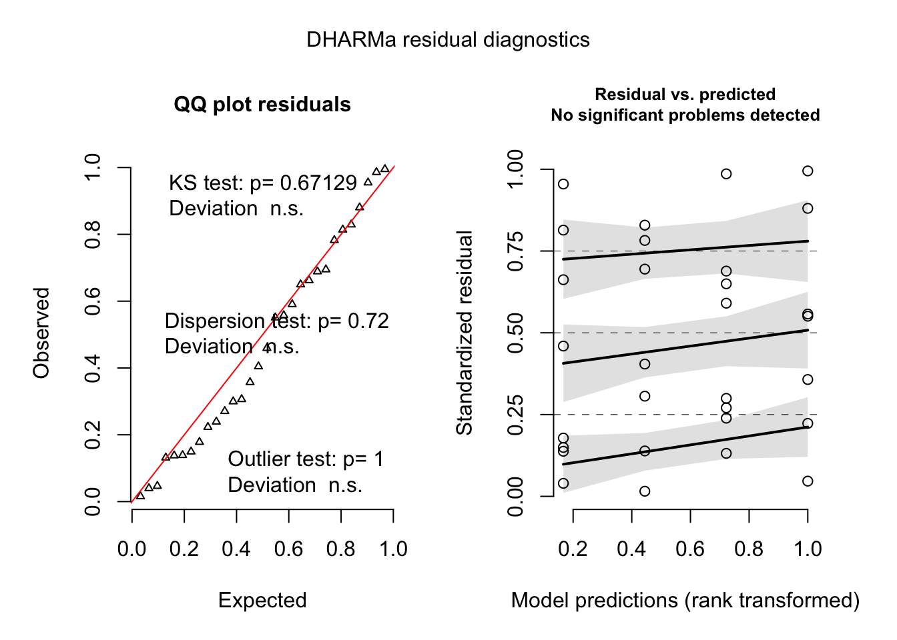

Hecale experiments
Across analyses on learning performance we asked whether the time of day influenced:
in subsections titled Initial preference, shifts in proportional preference for the colour rewarding in the morning when naïve, using a binomial GLMM with response variable “morning reward colour choices/afternoon reward colour choices” and fixed factor “time of day” (morning or afternoon);
in subsections titled Trained preference, shifts in proportional colour preference when trained, using the same specifications but with the additional fixed factor “presentation order” (standard or reversed).
Identity was included as a random effect throughout as well as cage if it did not lead to a singular fit due to no variance being captured by the variable.
Hecale, all individuals
We initially looked at all individuals—excluding those which did not attempt to feed from both feeders in AM or, more commonly, PM during training (see Hecale activity between time periods section), or did not make any foraging attempts during a final test session. We also established a training criterion given variation in responsiveness to the test during training we identified individuals that correctly adjust their behaviour in AM and PM sessions during training with reinforced feeders. In the Hecale high and low performers section we asked whether these individuals demonstrate evidence of learning by behaving in the same way when presented with unreinforced feeders in the post-training preference test.
Initial preference
This model asks whether there is a shift in preference for the colour that is rewarding in the morning between time periods.
Variables
n.morning.colour.initialis the number of choices made for the colour that is rewarding in the morningn.afternoon.colour.initialis the number of choices made for the colour that is rewarding in the afternooncageis the identity of the cage the individual was tested and trained inidis the identity of the individual butterfly
First we remove any individuals who did not make both colour choices in either morning or afternoon during training.
data2 = data %>%
group_by(id) %>%
filter(all(n.correct.training > 0 & n.incorrect.training > 0))Then we remove individuals who did not respond at all during a session at the final test.
data3 = data2 %>%
group_by(id) %>%
filter(all(n.morning.colour.test > 0 | n.afternoon.colour.test > 0))Is there a shift in preference for colours when individuals are naive ?
Model
naive.model =
glmer(cbind(n.morning.colour.initial, n.afternoon.colour.initial) ~
time.of.day + (1 | cage/id),
data = data3, family = binomial)Results
| term | estimate | std.error | statistic | p.value |
|---|---|---|---|---|
| (Intercept) | -1.156 | 0.991 | -1.167 | 0.243 |
| time.of.day2afternoon | 0.147 | 0.171 | 0.860 | 0.39 |
No, there is no significant shift in preference for the colour that is rewarding in the morning between time periods initially when individuals are naive.
Model Residuals
Trained preference
Variables
n.morning.colour.testis the number of choices made for the colour that is rewarding in the morning during the final testn.afternoon.colour.testis the number of choices made for the colour that is rewarding in the afternoon during the final testfinal.presentationis the order of the final test presentation (morning first or afternoon first)cageis the identity of the cage the individual was tested and trained inidis the identity of the individual butterfly
Model
Is there a shift in preference for colours when individuals are trained
trained.model =
glmer(cbind(n.morning.colour.test, n.afternoon.colour.test) ~
time.of.day * final.presentation + (1 | cage/id),
data = data3, family = binomial)Results
| term | estimate | std.error | statistic | p.value |
|---|---|---|---|---|
| (Intercept) | 0.444 | 0.456 | 0.974 | 0.33 |
| time.of.day2afternoon | -0.291 | 0.158 | -1.846 | 0.065 |
| final.presentationreversed | -0.107 | 0.632 | -0.169 | 0.865 |
| time.of.day2afternoon:final.presentationreversed | 0.270 | 0.192 | 1.409 | 0.159 |
We don’t find a significant shift as a result of time of day (p = 0.06) but the effect size is in the expected direction i.e. a decrease in the morning reward colour preference in the afternoon.
Model Residuals
Hecale high and low performers
We noticed considerable variation in how flexible individuals were during training i.e., some individuals performed better during training compared to others. In order to see whether high performers showed more evidence of learning than low performers we looked at the initial and trained preferences of butterflies that made a majority (>50%) of correct feeding choices in the final two training days in both the morning and afternoon as well as those that did not meet this criterion. The expectation is that high performers would show more evidence of shifting their preference throughout the day at the final test session.
Initial preference
High Performers
First we will be looking at the shift in preference initially in naive butterflies that were high performers in the experiment. To do so we will remove individuals who did not achieve greater than 50% correct responses in the last 2 days of training
data4 = data3 %>% group_by(id) %>% filter(all(prop.correct.training.last.2 > 0.5))We ask whether individuals who perform well in last 2 days of training shift preference between the time periods initially.
Model
naive.model.high.performers =
glmer(cbind(n.morning.colour.initial, n.afternoon.colour.initial) ~
time.of.day + (1 | cage/id),
data= data4, family = binomial)Results
| term | estimate | std.error | statistic | p.value |
|---|---|---|---|---|
| (Intercept) | -0.341 | 0.770 | -0.442 | 0.658 |
| time.of.day2afternoon | 0.064 | 0.246 | 0.258 | 0.796 |
High performers do not significantly shift preference initially.
Model Residuals

Low Performers
Next we will look at individuals which under-performed during training so we extract individuals below the criterion.
data5 = data3 %>% group_by(id) %>% filter(any(prop.correct.training.last.2 < 0.51))We now ask do individuals who were incorrect at high rate shift preference initially? Note we include the line control=glmerControl(optimizer="bobyqa",optCtrl=list(maxfun=2e5)) to change the optimizer since this model initially fails to converge.
Model
naive.model.low.performers =
glmer(cbind(n.morning.colour.initial, n.afternoon.colour.initial) ~
time.of.day + (1 | id), data =data5,
family = binomial,
control=glmerControl(optimizer="bobyqa",optCtrl=list(maxfun=2e5)))Results
| term | estimate | std.error | statistic | p.value |
|---|---|---|---|---|
| (Intercept) | -1.579 | 0.747 | -2.115 | 0.034 |
| time.of.day2afternoon | 0.264 | 0.237 | 1.111 | 0.266 |
Low performers also do not significantly shift their preference between time periods initially.
Model Residuals

Trained preference
Now we will look at trained preferences which were measured after 10 days of training.
High Performers
We first ask whether individuals who were correct at a high rate during training shift preference when trained. Note here the cage random effect was dropped due to it not capturing any variance leading to a singular fit.
Model
trained.model.high.performers =
glmer(cbind(n.morning.colour.test, n.afternoon.colour.test) ~
time.of.day * final.presentation + (1 | id),
data= data4, family = binomial)Results
| term | estimate | std.error | statistic | p.value |
|---|---|---|---|---|
| (Intercept) | 0.575 | 0.298 | 1.932 | 0.053 |
| time.of.day2afternoon | -0.435 | 0.173 | -2.507 | 0.012 |
| final.presentationreversed | -0.152 | 0.395 | -0.383 | 0.701 |
| time.of.day2afternoon:final.presentationreversed | 0.148 | 0.248 | 0.598 | 0.55 |
We find that there is a significant shift in preference for the morning colour between time periods among high performing butterflies. When trained these butterflies shift their preference for the morning reward colour by 12% (Figure 1).

Figure 1: Data from colour preference trials of H. hecale meeting the training criterion. (A) Naïve preferences in the morning and afternoon. (B) Preferences of butterflies from (A) post-training. Grey lines connect individuals. Data are means ± 95% CI.
Model Residuals
Low Performers
We now ask whether individuals who were not correct at a high rate shift preference when trained.
Model
trained.model.low.performers =
glmer(cbind(n.morning.colour.test, n.afternoon.colour.test) ~
time.of.day * final.presentation + (1 | cage/id),
data= data5, family = binomial)Results
| term | estimate | std.error | statistic | p.value |
|---|---|---|---|---|
| (Intercept) | 0.104 | 0.988 | 0.105 | 0.916 |
| time.of.day2afternoon | 0.460 | 0.391 | 1.176 | 0.24 |
| final.presentationreversed | 0.406 | 1.287 | 0.315 | 0.753 |
| time.of.day2afternoon:final.presentationreversed | -0.317 | 0.415 | -0.764 | 0.445 |
No significant shift in preference among low performers.
Model Residuals

Hecale activity between time periods
To see whether there was a difference in the total number of choices a butterfly made at a particular time period we used a Poisson generalised linear mixed effect model.
Variables
total.activityis the total number of choices (correct and incorrect) a butterfly made in a time periodtime.of.dayis the time period of the trial (morning or afternoon)cageis the identity of the cage the individual was tested and trained inidis the identity of the individual butterfly
Model
activity.model =
glmer(total.activity ~ time.of.day + (1 | cage/id),
data= data, family = poisson)Results
| term | estimate | std.error | statistic | p.value |
|---|---|---|---|---|
| (Intercept) | 4.270 | 0.102 | 41.887 | < .001 |
| time.of.day2afternoon | -0.346 | 0.026 | -13.082 | < .001 |
On average butterflies make 24 less choices in the afternoon.

Figure 2: The morning and afternoon activity values for individuual btuterflies. Data are means +/- 95% CI. Lines connects individuals across time periods